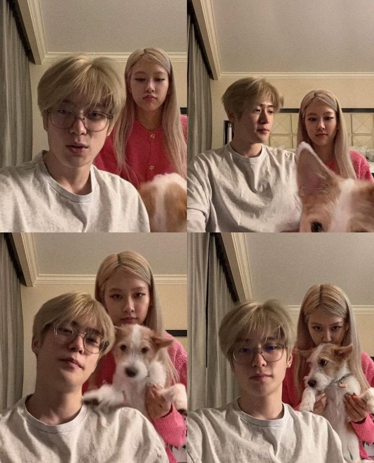

Gue tau sih lu kadang ngeselin, tapi tetep aja gue nggak bisa jauh dari lu. Mskipun kadang kelakuan lu bikin gue pengen ngilang sebentar. Makasih ya kak, udah jadi superhero yang kuat dan hebat yang selalu ada kapan aja gue butuh. Lu pinter bikin suasana jadi lebih hidup dengan cara-cara konyol dan nggak terduga. Tanpa lu hidup gue mungkin bakal lebih membosankan, kayak jalan tol yang lurus tanpa belokan. Walaupun suka kesel, gue tetap bersyukur punya lu karena lu bikin setiap hari jadi lebih seru dan penuh warna.
Kak, gue cuma mau ingetin buat selalu jaga kesehatan dan diri lu. Jangan sampe kerja keras atau segala hal yang lu lakuin bikin lu lupa buat ngerawat diri. Kesehatan itu penting banget baik fisik maupun mental, karena lu nggak bisa bahagia kalo badan lu nggak sehat. Luangin waktu buat istirahat, makan dengan baik, dan jangan lupa senyum. Bahagia itu nggak selalu soal besar, tapi soal bisa nikmatin hal kecil yang ada di sekitar kita. Gue cuma pengen liat lu selalu sehat, bahagia, dan tetap jadi superhero yang keren seperti sekarang.

Hey Kak Milan,
I just want to take a moment to say thank you for always being there in my life. Lu mungkin nggak sadar, tapi kehadiran lu itu punya dampak besar buat gue. Every time I look at you, I learn so much—how to stay strong, how to stay calm even when life gets messy, and how to be myself no matter what kind of pressure comes my way.
Gue tahu, jalan hidup nggak selalu mulus, dan kadang apa yang kita rencanain nggak berjalan sesuai harapan. Tapi, Kak, I truly believe you’ll always find a way to get through it in your own unique style. Lu tuh luar biasa, bahkan di saat-saat tersulit sekalipun. Gue cuma mau bilang, apa pun yang lagi lu hadapin sekarang, gue percaya banget sama lu dan bakal selalu dukung lu sampai kapan pun.
Oh iya, Kak, don’t forget to enjoy the little moments too. Hidup itu nggak selalu soal ngejar tujuan besar atau hasil akhir, tapi juga tentang menikmati setiap langkah kecil dalam perjalanan. Gue harap lu bisa nemuin hal-hal kecil yang bikin lu bahagia, entah dari orang-orang yang lu sayang, momen-momen random, atau hal-hal kecil yang bikin lu senyum tanpa sadar.
And lastly, kak gue harap lu selalu inget satu hal, gue bakal selalu ada buat lu sama kayak lu yang selalu ada buat gue. You’re amazing just the way you are, and I couldn’t be more proud to call you my brother.
Keep being the incredible person you are, Kak. Gue sayang banget sama lu, dan gue bakal selalu jadi orang yang ngedukung lu di setiap langkah lu.